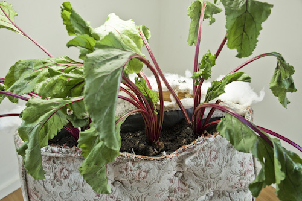
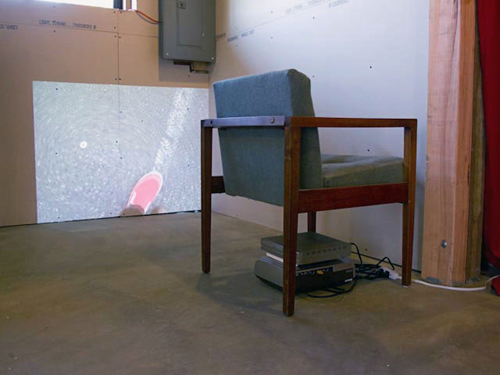

Images from the NEPO 5k House show
Although the NEPO 5k was less about the destination and more about the journey, the NEPO House show was - in my opinion- a quiet punctuation mark. It asked you to take your time and slow down enough to let it in, to absorb it. Arguably, that was not an easy thing to do while there was so much going on outside. So I will walk you through the house after everyone has left (and we have cleaned up again). Enjoy the view.
All photos by Zack Bent, unless stated otherwise.
"Soft Desires I Can Trace" an installation by Serrah Rusell. See below for a full list of artists who contributed their work. On the hanger: untitled (ponchos) by Matt Offenbacher.
"Soft Desires I Can Trace" - installation detail.
"Soft Desires I Can Trace" - installation detail.
"Soft Desires I Can Trace" - installation detail.
Troy Gua, Colorbanz series starting top left: Portrait of Kanye West As Colorbandz, Portrait of Cee Lo Green As Colorbandz, Portrait of Lady Gaga As Colorbandz, Portrait of Donald Trump As Colorbandz, Portrait of Bill Clinton As Colorbandz (partial view), Portrait of Dalai Lama As Colorbandz, Portrait of Bono As Colorbandz, Portrait of American Jesus As Colorbandz Landscape.
Golden dollars by Max Kraushaar and Sean McElroy.
Pattern kite by Francesca Lohmann
Prop from "Impaculate beet plot", In-production (2012) - installation by Hanita Schwartz.

"Impaculate beet plot" - detail.
"Classic form for Danilo Kis" drawing by Amanda Manitach (detail).
One piece from the "The Tossed Salad Bowl Series" by Tony Sonnenberg.
Owl and Porcupine by Baso Fibonacci.
"Artificial Mother" by Ian Toms.
In the foreground: "Elbow" and "Study for Green Hill" by Chauney Peck. Hanging in the background: "The Dying Slave (self portrait)" by Tony Sonnenberg.
"blanket series" by Joey Veltkamp.
"blanket series" by Joey Veltkamp.
"Three pairs of underware" by Klara Glosova.

Video by Izzie Klingels and John Brown. Sound by Damon Mori.
"carry the one, drop the rest" by Sharon Arnold.
"Floral Lace Study #1" by Tony Sonnenberg.
"Untitled (Stu)" by Robert Yoder.
"Two Zigs in Love" by Daphne Stergides.
"Stockholm Syndrome" by Leo Berk.
Robin Crookall and Lauren Klenow: "Speedway" (animation).
Debra Baxter - "Pit of my chest" and "Lean on me ( lean too)" - installation view.
Debra Baxter: "Lean on me ( lean too)".
Serrah Russell: "Float".
Matt Hilger: "caught out of the rain" (Eric Fredricksen unraveling print on billboard size paper). Photo by Matt Hilger.
Matt Hilger: "caught out of the rain" (unraveled). Photo by Matt Hilger.

"seven minutes and thirty seconds after leaving the house you're still convinced that you've forgotten something" - video by Matt Hilger. Photo by Matt Hilger.
"The Loon" by Mike Simi. See it in action
here. (Eventually we may have Nepo video footage.)
Rumi Koshino (untitled) - video.
Neal Fryett: "Slow Fountain" - video.
Mike Estabrook: "Staircase" - video projection. You can see the entire animation
here.
And last, but not least "Living Room Library" by Whitney-Ford Terry and Jessica Powers.
---------------------------------------------------------------------------
5k NEPO House show - list of artists:
Sharon Arnold, Debra Baxter, Leo Berk, Robin Crookall, Mike Estabrook,Baso Fibonacci, Neal Fryett, Klara Glosova, Troy Gua, Sohroosh Hashemi, Matt Hilger, Lauren Klenow, Izzie Klingels, Rumi Koshino, Francesca Lohmann, Amanda Manitach, Matthew Offenbacher, Chauney Peck, Hanita Schwartz, Serrah Russell, Carolina Silva, Mike Simi, Tony Sonnenberg, Daphne Stergides, Ian Toms, Joey Veltkamp, Brad Winchester and Robert Yoder
Soft Desires I Can Trace
An interactive installation curated by Serrah Russell:
Claire Cowie, Nathan Lincoln, Ellen Garvens, Hannah Russell, Amelia Hooning, Sharon Arnold, Zack Bent, Nuala Ni Fhlathuin, Jen Mao, Rosemarie Auberson, Jess Marie, James Gallagher, Maggie Carson Romano, Andrea Pinheiro, Rumi Koshino, Celia Perrin Sidarous
---------------------------------------------------------------------------
View images from the 5k route
Click here for older posts and maps.